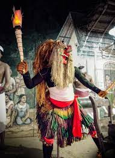

"Sanni Yakuma"
ABOUT
The "Daha Ata Sanniya" is a traditional dance ritual held to exorcise 18 types of diseases from the human body. Though an extremely colourful and vibrant pageant, most Sri Lankans do not get the chance of witnessing it, due to the performance's exorbitant costs and the long duration.
The origin of this Shanthi Karmaya (blessing) took place in the times of ancient kings and was performed in the southern and western parts of the country. According to the story, while King Sankapala was at war, his wife who was pregnant had a sudden craving for a certain variety of mango. As she ate it, her maid of honour too had wanted a piece of the fruit, but had been refused by the Queen. Angry at this refusal, the maid cursed her and when the King returned after the war, told him that the Queen had conceived out of wedlock. The story was believed and the Queen was sliced in two with a sword. The baby was born and ate off his mother and so, a devil was born. As the story goes, lead by this devil, 18 other devils were created and they in turn came to towns and cities and began to spread in the form of diseases. It is to counter this type of sickness that the Daha Ata Sanniya originated.
'Daha Ata Sanniya" will be performed in two sections where the first part will consist of seven palis, while the second part will be performed as the 18 sannis.
The mask known as Dahaata Sanniya or ‘eighteen disease’ is studded with 18 diseased faces atop a pair of their gods and two spirits one the spreader of pain through disease and other the saviour is placed vertically apart. Prof. M.H. Goonatilleka explained that in folk religion this is in vogue. He explained that "Pritiatory magical and therapeutic effects of mask and attendant rituals of Sri Lanka are still not forgotten in the remote parts of the country. The dancer donning demon masks may not be aware of the significance of ritual transformation and the assumption of the role of the disease-causing demon."
Those eighteen masks are:
01. Buta Sanniya which is associated with derangement, distortion and listlesness of limbs;
02. Jala Sanniya relates with vomitting, dysentry etc;
03. Gulma sannya refers to lack of appetite, swelling of the abdomen ;
04. Kana Sanniya relates with blindness;
05. Kora Sanniya and Bihiri Sanniya relate with Lameness and Deafness respectively;
06. Vata Sanniya is related with Flatulence provoked by aerial humour;
07.Slesma Sannya is associated with Phlegmatic diseases;
08. Pneumonia is represented with mask Kola Sanniya;
09.Maru Sanniya is wallowing and contortions in the eyes etc.
10. Amukku Sanniya relates with running with the head tilted to the left trembling of the
limbs;
11. Golu is Dumbness;
12.Vevulum Sanniya is associated with shivering and feats;
13. Gini Jala Sanniya is about burning sensation,headache and fatigue;
14.Pissu or Kapala Sanniya is related with madness and delirium;
15. Demala Sanniya is also related with madness with distortion of the body;
16. The Naga Mask is related with swelling of the faces and peeling of skins and
Deva Mask is related with epidemics and infectious diseases